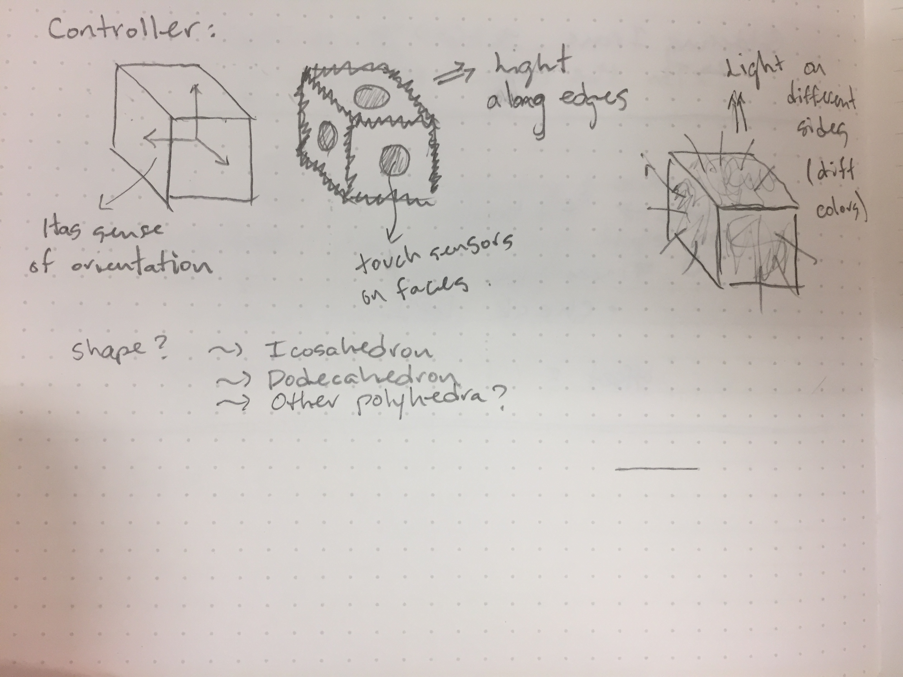
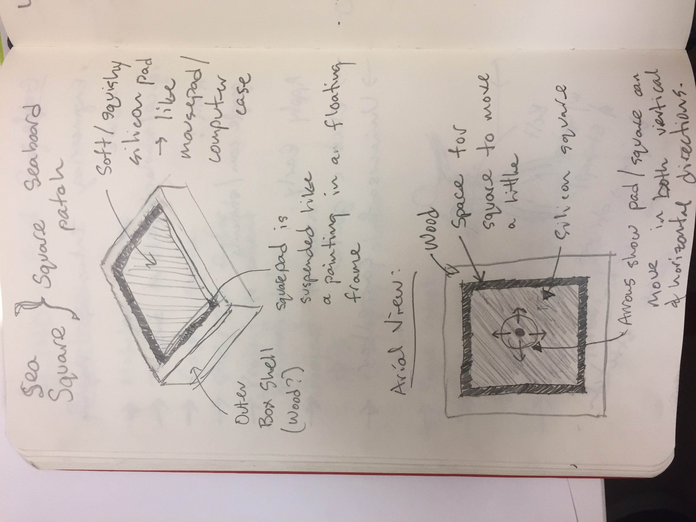
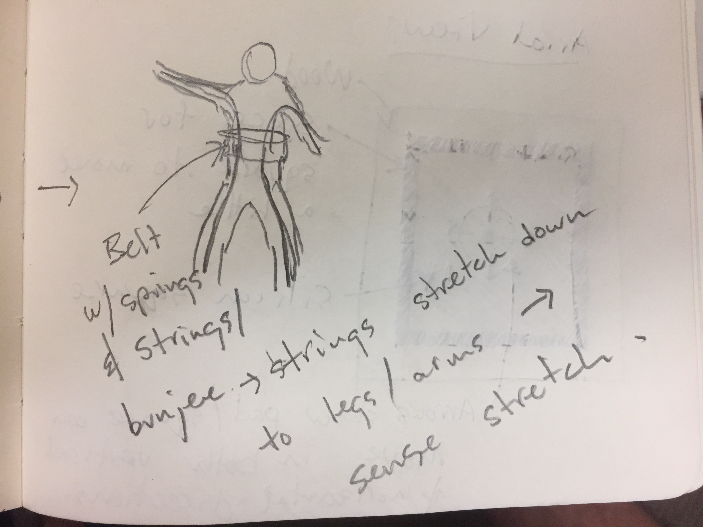
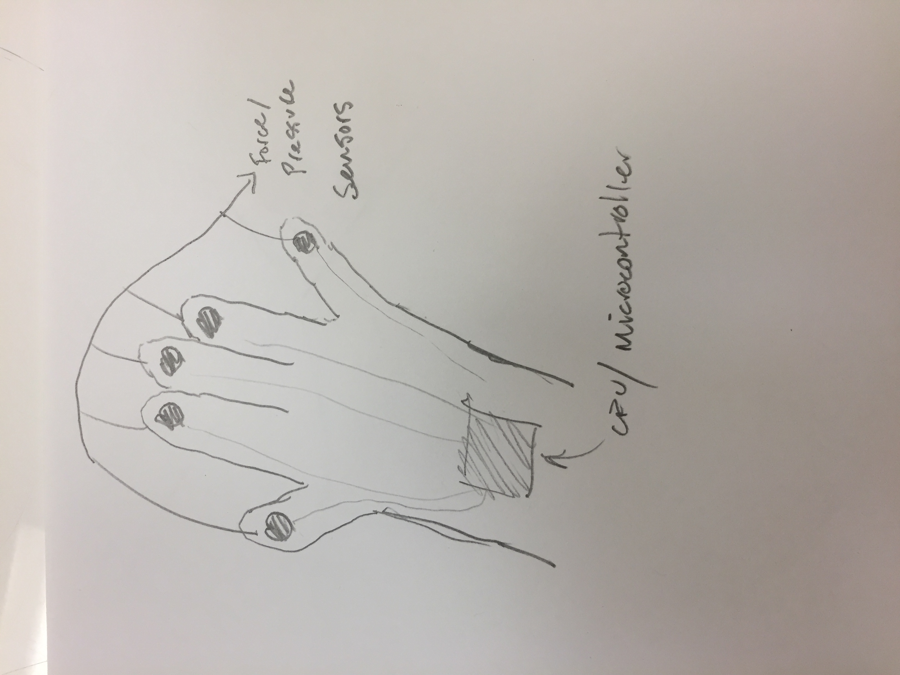
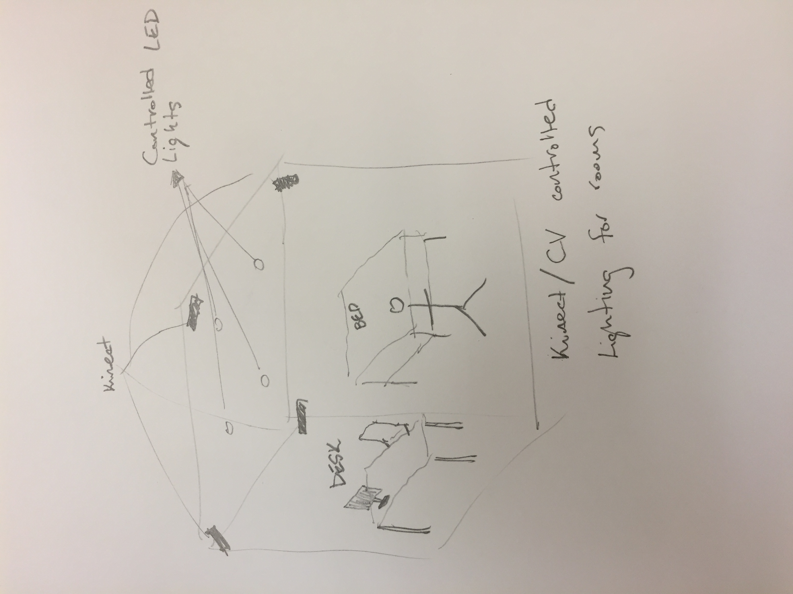

Project Name: TBD
Team Members: Max Allen, Tim Chong
Fitting Criteria:
1. Laser Cut / 3D Printed Parts: Headset is 3D printed or electronics casing is 3D printed
2. Custom Electronics: We’re using EEG sensors
3. Custom Code and Wifi: Code to process the EEG data and create mood profiles based off brain wave data. Wifi to communicate with
4. environmental devices through REST APIs.
5. User Input: We’re using user’s brain waves and their desirable mood as input
6. Real-World Problem: Overstimulation and people trouble to focus or be comfortable in their environment.
Idea Brainstorm:
Idea 1: Universal Controller

The universal controller idea is to make an object (cube or other type of polyhedra) that fits naturally in ones hand, and has an array of sensor inputs including an IMU and touch sensors on the faces, as well as a couple output devices like LEDs and / or vibration motor. This controller would act like a customizable keyboard or MIDI controller to be able to be linked to various aspects of one's computing flow or home interactions. Some use cases might include using these to controll lights and music, using these to select various functions in programs, etc.
Idea 2: Square Seaboard / Touchpad

The sqare seaboard is a new type of MIDI (Musical Instrument Digital Interface) controller that sends multidimensional polyphonic expression packets to one's computer that can be mapped to a wide variety of filters, knobs, and other controls within music creation software. The multiple dimentions come from being able to track one's finger position within 2 dimentions, as well as taking account of pressure.
Idea 3: Body Tracking Suit

This body tracking suit is equipped with a central processing unit (in the belt or perhaps on one's back) that measure the stretch along thread / string going from the central unit along one's appendages (arms, legs). With different amounts of contraction, you wan map out how someone is moving, and that can act as an input into platforms including video games, interactive dance technologies, etc.
Idea 4: Glove Controller

The glove controller is a more narrow version of the body tracking suit that more granularly tracks the movement of one's hand and can sense when one's fingers are making contact with various things. These inputs can again control parameters such as music software or be used to capture gestures that control new types of operating systems / programs.
Idea 5: Light Control Kinect System

The light control kinect system is a way to translate one's actions in a space to influence the climate (in the case lighting) of the space. For example, if the Kinect sees that one is working at a desk, the lights might turn brighter and focus around the workspace, whereas if one is laying in one's bed the lights would automatically dim or even turn off (maybe depending on the tiem of day). The idea with this project is to start to create an environment that reacts to the user intuitively rather than from explicit commands from the user.
Weekly Progress Log:
We're in the process of making this a lot prettier! Stay tuned for more up-to-date documentation!